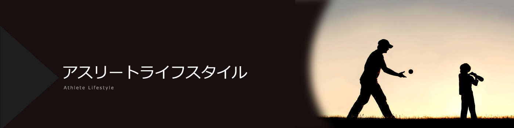

当サイトでは、利用測定やトラフィック分析を目的として、クッキー(Cookie)を利用しています。
当サイトの閲覧を続けた場合、クッキーの利用に同意いただいたことになります。
詳しくはプライバシーポリシーをご覧ください。
初二便在全日本乒乓球锦标赛斩获史上最年轻冠军的张本智和。他在2021年夏季举办的东京奥运会上助力日本男团摘得铜牌，以耀眼的成绩引领着日本乒坛的发展。我们对这位志在攀登新高峰的选手进行了专访，向他深入了解了他在构筑运动员生活方式的过程中对乒乓球所持的心态。
―能否谈谈您决定从初中开始便离开家乡仙台，就读JOC精英学院的原因？
张本大概从小学三年级开始，我被选入按年龄段划分的国家队，去国家训练中心的次数也因此多了起来。我在那里频繁接触到了JOC精英学院的选手们，他们都非常出色，对我而言是憧憬的存在。于是从那时起，我便暗自决定，等自己升初中时一定要进入这里。
―在JOC精英学院，不仅提升了您的竞技能力，连智力和生活自理能力也都得到了提升。环境改变后的努力很快见到了成效，您在初二时便成功登顶全日本乒乓球锦标赛，创下了最年轻的冠军记录。
张本现在回想一下，那时真是创下了令人难以置信的成绩。当时我完全没多想，只是凭着一腔热血在拼搏。但现在看来，若没有那时的自己，也就不会有现在的我了。能在初二时取得那样耀眼的成绩，真是深感庆幸。
―参赛前是否有设定什么明确的目标？
张本虽未明确规划目标，但模模糊糊地想过“希望在高中前夺得全日锦冠军”。因为水谷隼选手是在高二的时候夺冠的，所以我心里想着自己要在那之前夺冠，但我完全没想到自己能这么早就实现，对于这一结果就连我自己都倍感惊讶。
―您认为促使自己实现突破的原动力是什么？
张本在初中一年级之前，我的生涯几乎是一帆风顺的，很少经历挫折，总能取得理想的成绩。但在那年的全日锦青少年组的比赛中，我首次止步八强。要知道那时的我才刚在一个月以前的世青赛上夺冠，却在全日锦的赛场上就这么草草收场。那时的我第一次觉得“咦？不对劲”，“这样下去要赶不上东京奥运会了”。生平首次怀揣着危机感全身心地投入到训练之中。
―第一次经历挫折时，您自身发生了什么变化？
张本我增加了规定训练以外的自主训练。那时的我强烈地意识到“不能再这样下去了”，于是开始早上早起练发球，在大家都在7点结束训练时，我会坚持加练到8点。正是这些日复一日的积累，促成了我的进步。
―在那段时期，是什么促使您振作起来的呢？
张本我属于那种别人越让我做什么我反而越不想做什么的类型。大家当时都很关心地问我“你还好吗？”，对我非常照顾,但这反而让我觉得“刺激不足”，内心强烈意识到"必须自己行动起来了"。我想，如果当时有人命令我"快去训练"，恐怕反而会适得其反吧。
―您觉得乒乓球项目的魅力体现在何处？
张本在所有持拍类运动中，乒乓球是交手双方距离最近的项目。正因如此，我认为在这一项目中，相较于技术因素，心理上的较量更易左右赛事走向。当心理压力真的大到令人痛苦时，甚至会抗拒看到对手的脸，内心深陷于“今天被看穿了”的感受中；反过来，当我状态正佳时，也能立刻捕捉到“对手露出了不安的神色”。我认为，这种心理博弈与无形中的精神对决，正是乒乓球运动的精髓所在。
―您在比赛中是容易紧张的类型吗？
张本我认为自己比起常人更容易紧张。赛前经常会紧张到产生“真的不想比赛了”的念头，几乎是硬着头皮站上了赛场。当然，一旦踏上赛场，我就会迅速转变为“只能拼了”的心态，但我也确实是那种在一开始便承载着极高的心理负载的类型。
―您认为与紧张情绪良好共处、维持强大心理素质的关键是什么？
张本关键在于抱有"绝不想输"的坚定信念。一旦自我放弃，对手便会乘势而上，因此必须全力阻止这种局面发生。始终保持“绝对要赢”的坚定信念才能踏实地奋斗。
―东京奥运会结束后，您有什么新的感悟吗？
张本虽然站上了自小学起便梦寐以求的赛场，但整届奥运会给我的感觉是一下子就结束了。我其实也希望能多感受一会儿东京奥运会的氛围，不过至少在男子团体中拿到了奖牌，这一点还是值得欣慰的。只不过也确实留下了诸多不甘，希望这些遗憾能转化为征战下届巴黎奥运会的动力。
―您认为实现目标的关键是？
张本归根结底，自己才是最大的障碍。战胜自我比击败对手更能通向最终的胜利。虽然偶有自我溃败之时，但通过回忆自己一路走来的艰辛历程与不甘过往，便能重燃斗志。愈是在想要自我松懈的时候，愈要想起那些痛苦经历从而将心思集中在乒乓球上，我觉得这是对我而言最有效的方法。
―在不断向着更高目标迈进的征程中，您现阶段的奋斗目标是什么？
张本竞技目标是在奥运会上至少拿下一枚金牌。另一个目标是成为令人憧憬的选手。尽管每一位金牌得主都各具风采，但我立志要成为其中最受人敬重的存在。无论是作为普通人，还是作为选手，我都想努力成为“最出色的人”。
―最后，请对今后志在世界舞台的运动员们说句话。
张本首先要确立明确的目标。为了达成那个目标，就要自己好好思考该怎么做，并持之以恒地努力，我相信目标终会逐一实现。请相信自己，永不言弃，全力以赴地去追求吧。

2003年６月27日出生，宫城县仙台市人。受曾是乒乓球运动员的父母影响，自2岁起执拍训练，逐步提升实力。小学一年级便在全日本乒乓球锦标赛Bambi组夺冠，此后实现该赛事六连冠。初中进入JOC精英学院，自此正式踏上成人赛场征途。13岁时成为世锦赛史上最年轻的八强选手，在初二时又刷新了全日本乒乓球锦标赛的最年轻夺冠纪录，屡创国内外赛事佳绩。2021年东京奥运会上助力日本男团摘铜。右手横拍弧圈打法。现世界排名第3位（截至2025年3月25日）。
中学１年生の時の大会で思うような結果を残せず、初めて危機感や焦りを感じたという张本選手。練習時間よりも少し早く来て自主練習に励み、誰よりも遅くまでトレーニングをするなど、毎日コツコツと重ねた努力が翌年の史上最年少での全日本制覇という結果に結びつきました。このように、強くなるためにするべきことを自分自身で考え、行動に移すことは、思い描くアスリートライフスタイルを築いていく上でとても重要なことです。また、张本選手は「選手だけではなく、一人の人間として尊敬される金メダリストになること」が今後の目標だと言います。
あなたは、どのような選手になりたいですか？どのような強みを活かしていきたいですか？そのために自分にできることを考えて、ぜひトライしていきましょう。